Dødelig dosis · visuelt galleri Udviklingsdokumentation. Indeholder løsningen til sag 001. Klik på et billede for at åbne originalen. Screenshots er faktiske browseroptagelser; illustrationer er genereret til den fiktive undervisningssag.
Spillet på desktop, mobil og i landskab
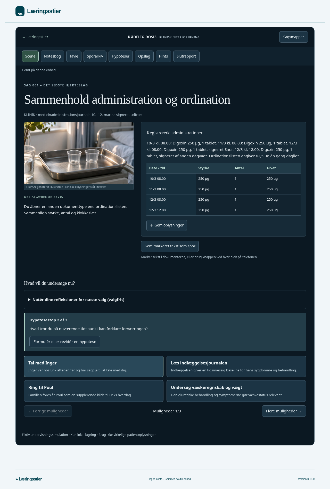
Ordination og faktisk administration · 1280 px. Kontrollér læsbarhed, tydelige handlinger og at alle oplysninger kan nås uden vandret sidescroll. 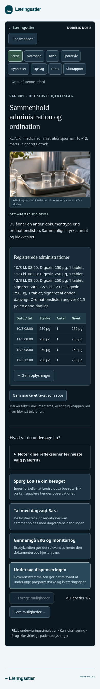
Ordination og faktisk administration · 390 px. Kontrollér læsbarhed, tydelige handlinger og at alle oplysninger kan nås uden vandret sidescroll. 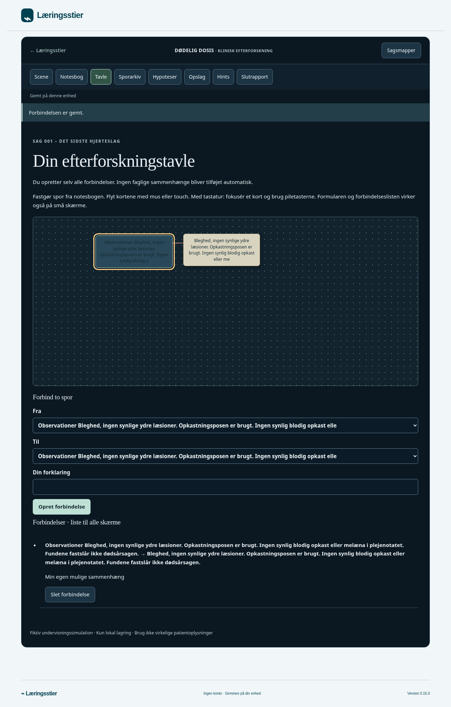
Manuelt forbundne spor på tavlen · 1280 px. Kontrollér læsbarhed, tydelige handlinger og at alle oplysninger kan nås uden vandret sidescroll. 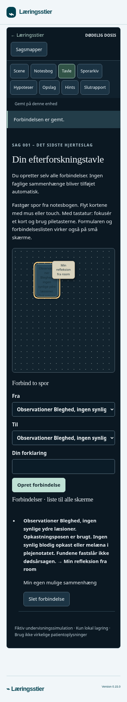
Manuelt forbundne spor på tavlen · 390 px. Kontrollér læsbarhed, tydelige handlinger og at alle oplysninger kan nås uden vandret sidescroll. 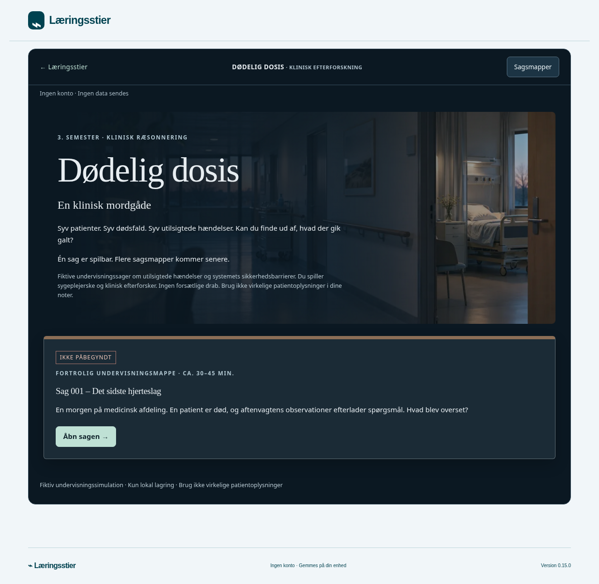
Sagsmapper uden afsløring af præparat · 1280 px. Kontrollér læsbarhed, tydelige handlinger og at alle oplysninger kan nås uden vandret sidescroll. 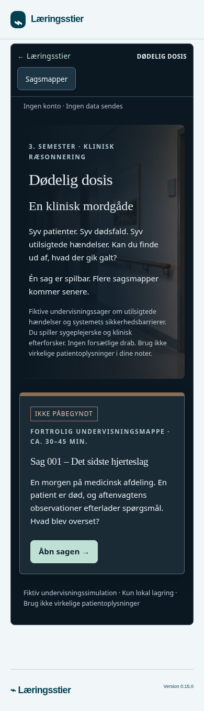
Sagsmapper uden afsløring af præparat · 390 px. Kontrollér læsbarhed, tydelige handlinger og at alle oplysninger kan nås uden vandret sidescroll. 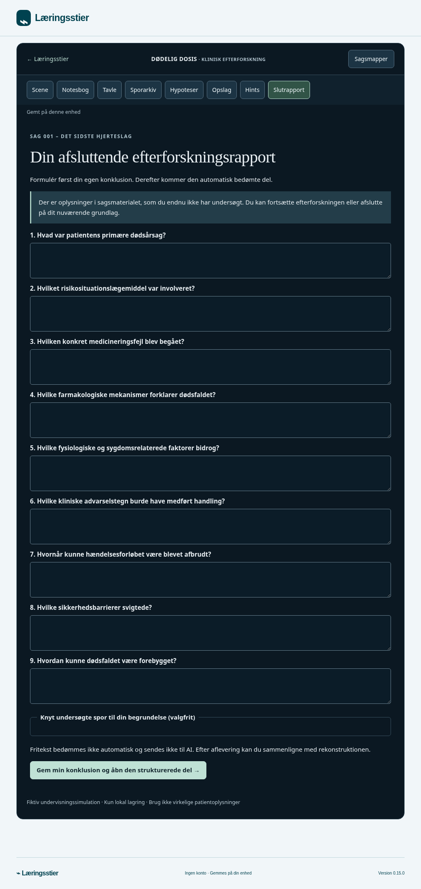
Responsive kontrolbilleder · 1024x768 px. Kontrollér læsbarhed, tydelige handlinger og at alle oplysninger kan nås uden vandret sidescroll. 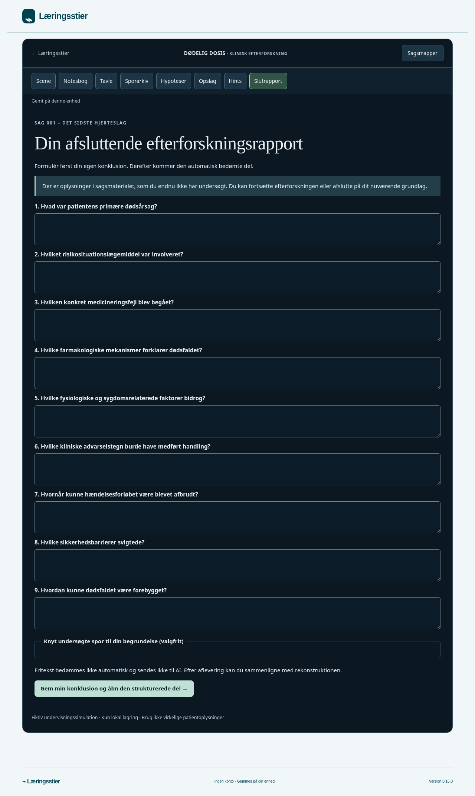
Responsive kontrolbilleder · 1280x800 px. Kontrollér læsbarhed, tydelige handlinger og at alle oplysninger kan nås uden vandret sidescroll. 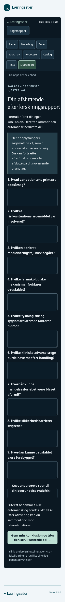
Responsive kontrolbilleder · 320x568 px. Kontrollér læsbarhed, tydelige handlinger og at alle oplysninger kan nås uden vandret sidescroll. 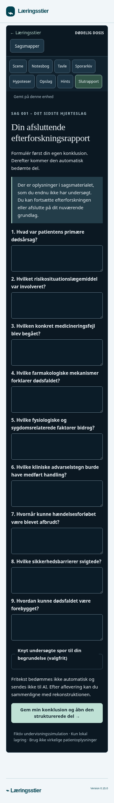
Responsive kontrolbilleder · 375x667 px. Kontrollér læsbarhed, tydelige handlinger og at alle oplysninger kan nås uden vandret sidescroll. 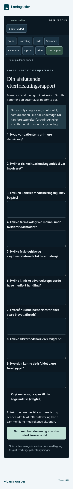
Responsive kontrolbilleder · 390x844 px. Kontrollér læsbarhed, tydelige handlinger og at alle oplysninger kan nås uden vandret sidescroll. 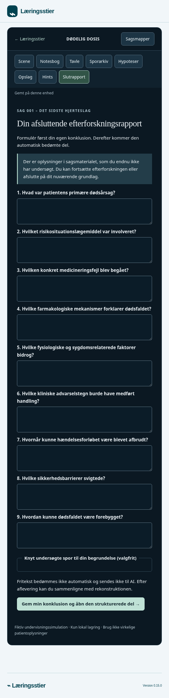
Responsive kontrolbilleder · 568x320 px. Kontrollér læsbarhed, tydelige handlinger og at alle oplysninger kan nås uden vandret sidescroll. 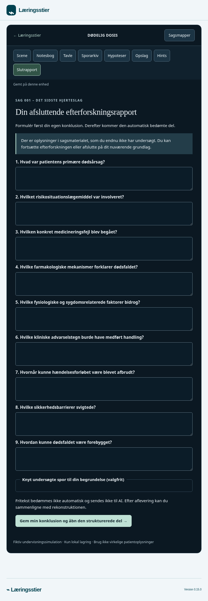
Responsive kontrolbilleder · 768x1024 px. Kontrollér læsbarhed, tydelige handlinger og at alle oplysninger kan nås uden vandret sidescroll. 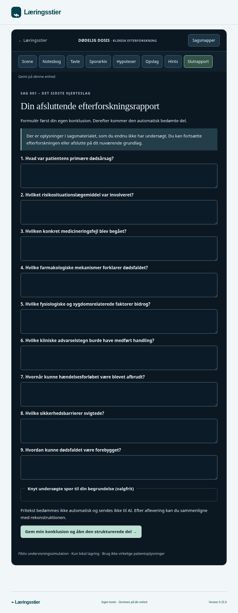
Responsive kontrolbilleder · 844x390 px. Kontrollér læsbarhed, tydelige handlinger og at alle oplysninger kan nås uden vandret sidescroll. Stue 14 og de tre indledende valg · 1280 px. Kontrollér læsbarhed, tydelige handlinger og at alle oplysninger kan nås uden vandret sidescroll. 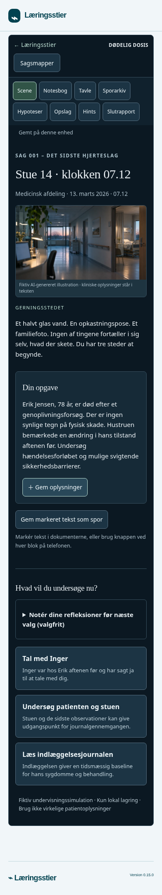
Stue 14 og de tre indledende valg · 390 px. Kontrollér læsbarhed, tydelige handlinger og at alle oplysninger kan nås uden vandret sidescroll. 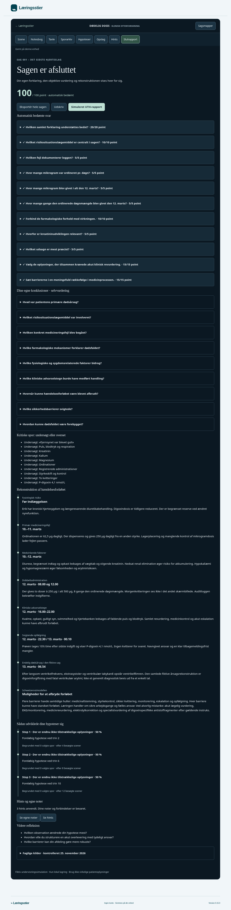
Evaluering og rekonstruktion · 1280 px. Kontrollér læsbarhed, tydelige handlinger og at alle oplysninger kan nås uden vandret sidescroll. 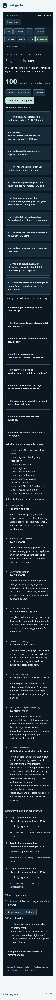
Evaluering og rekonstruktion · 390 px. Kontrollér læsbarhed, tydelige handlinger og at alle oplysninger kan nås uden vandret sidescroll. 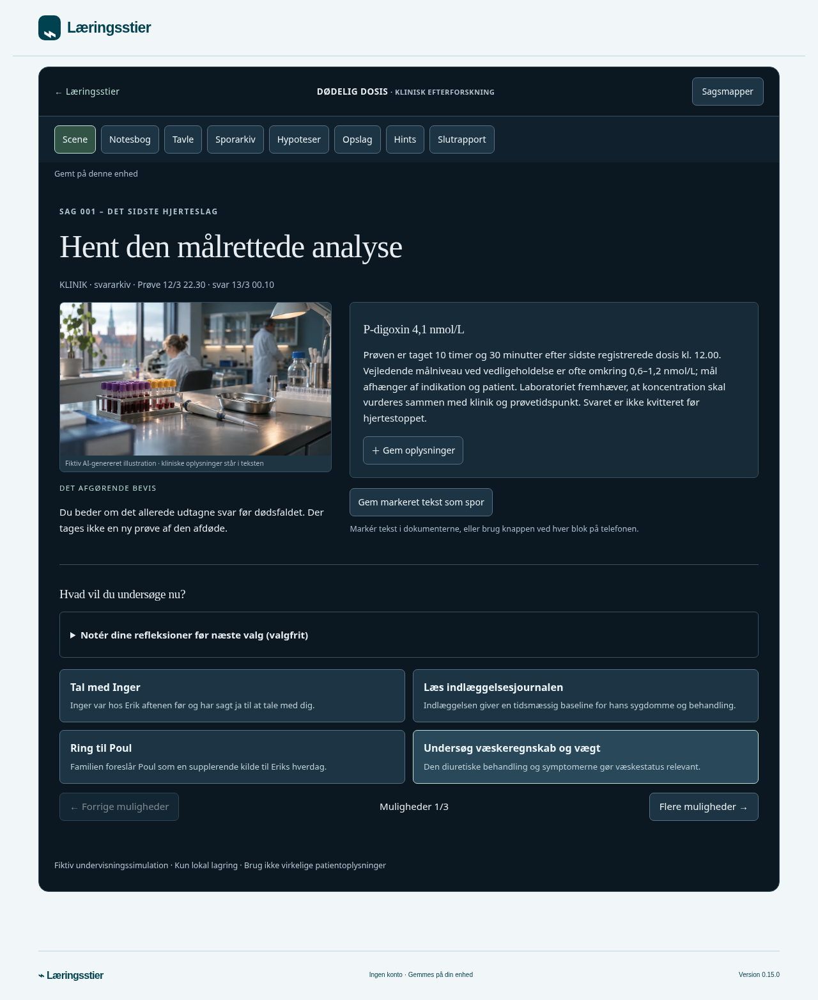
Den målrettede analyse efter begrundet mistanke · 1280 px. Kontrollér læsbarhed, tydelige handlinger og at alle oplysninger kan nås uden vandret sidescroll. 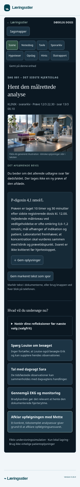
Den målrettede analyse efter begrundet mistanke · 390 px. Kontrollér læsbarhed, tydelige handlinger og at alle oplysninger kan nås uden vandret sidescroll. 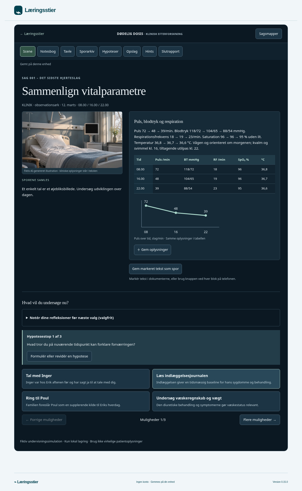
Tidsfæstede vitalparametre og graf · 1280 px. Kontrollér læsbarhed, tydelige handlinger og at alle oplysninger kan nås uden vandret sidescroll. 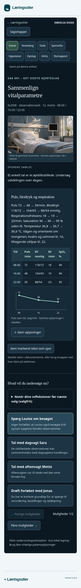
Tidsfæstede vitalparametre og graf · 390 px. Kontrollér læsbarhed, tydelige handlinger og at alle oplysninger kan nås uden vandret sidescroll. 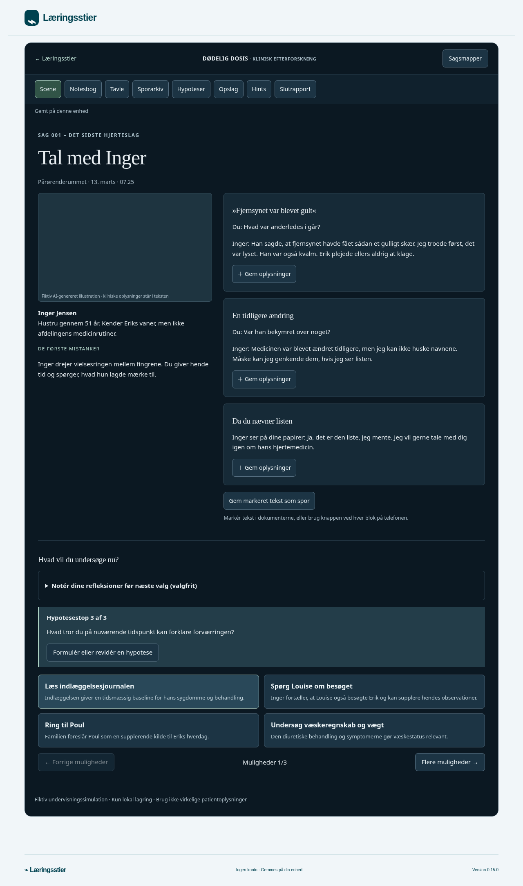
Interview med Inger · 1280 px. Kontrollér læsbarhed, tydelige handlinger og at alle oplysninger kan nås uden vandret sidescroll. 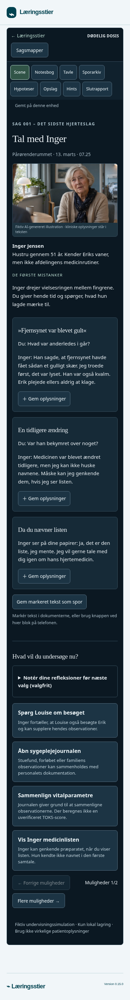
Interview med Inger · 390 px. Kontrollér læsbarhed, tydelige handlinger og at alle oplysninger kan nås uden vandret sidescroll. 19 originale illustrationer Ingen diagnostiske tal, lægemiddeletiketter eller EKG-kurver fra billedgenerering anvendes. Alle kliniske oplysninger står i kontrolleret HTML.
facade · 1279 × 720 · 117 KiB 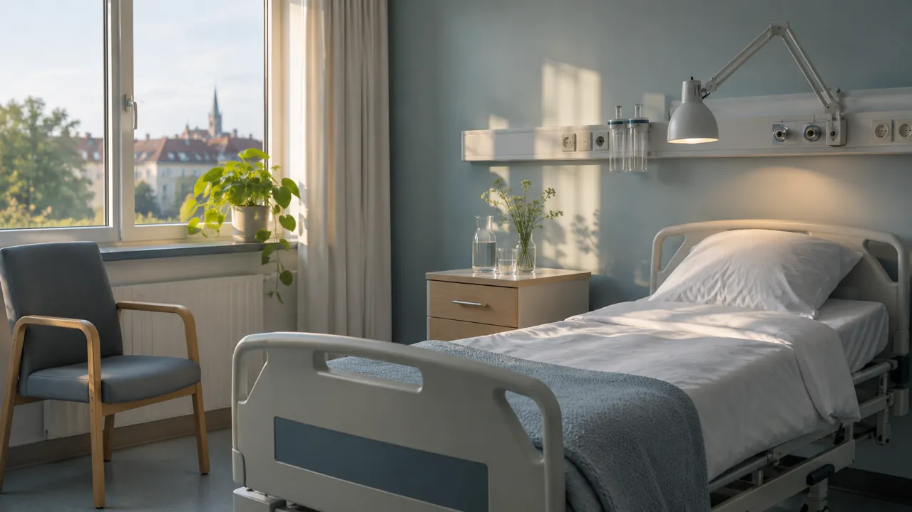
room · 1279 × 720 · 47 KiB 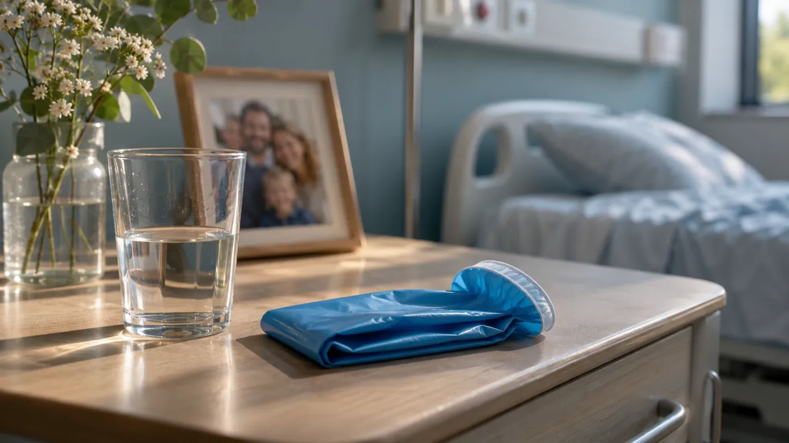
bedside · 1279 × 720 · 53 KiB 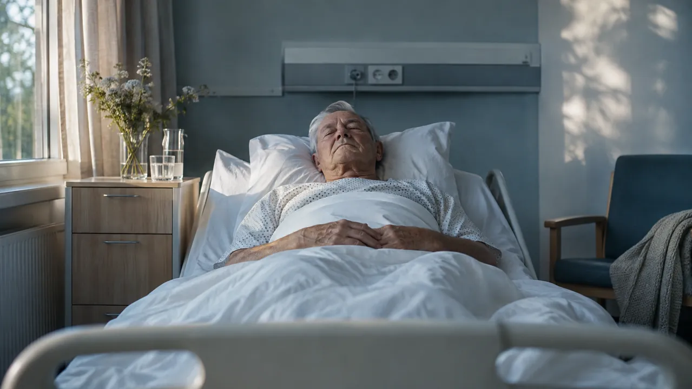
patient · 1279 × 720 · 47 KiB wife · 1279 × 720 · 75 KiB 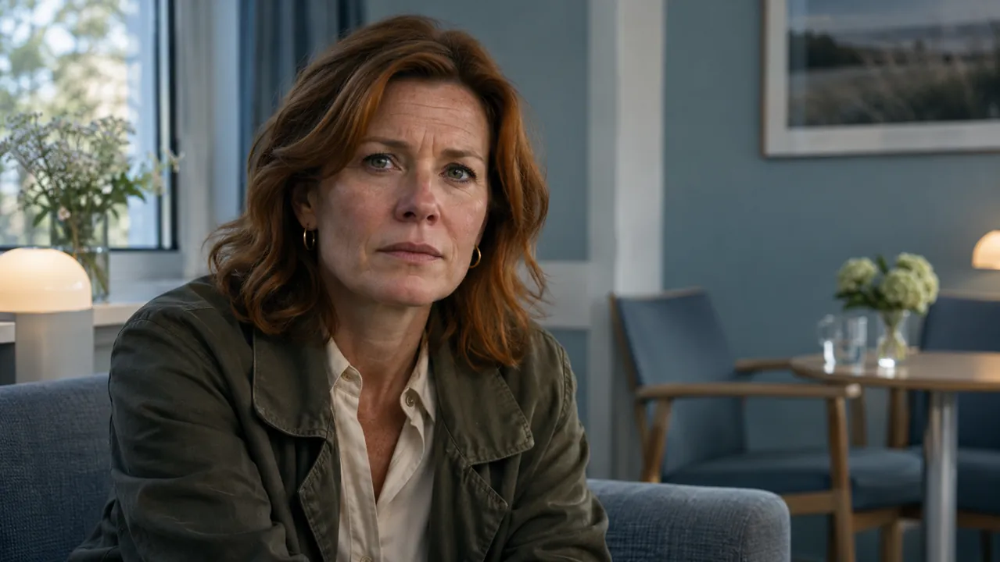
daughter · 1279 × 720 · 45 KiB friend · 1279 × 720 · 78 KiB day-nurse · 1279 × 720 · 40 KiB evening-nurse · 1279 × 720 · 40 KiB doctor · 1279 × 720 · 46 KiB 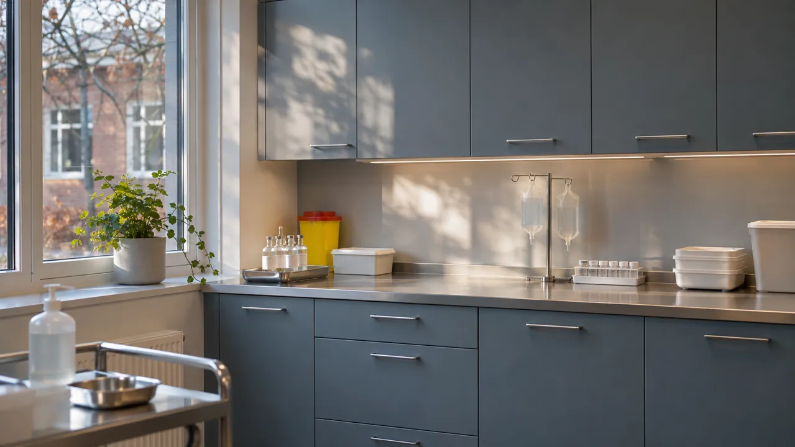
medicine-room · 1279 × 720 · 48 KiB 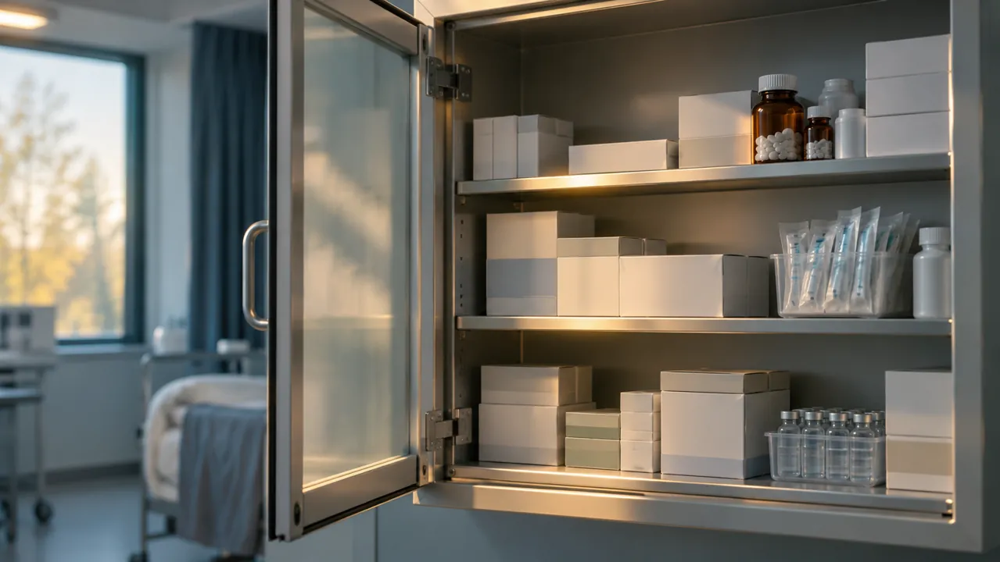
cabinet · 1279 × 720 · 40 KiB lab · 1279 × 720 · 52 KiB 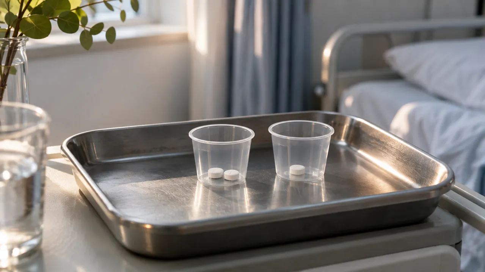
tray · 1279 × 720 · 41 KiB workstation · 1279 × 720 · 52 KiB family · 1279 × 720 · 83 KiB 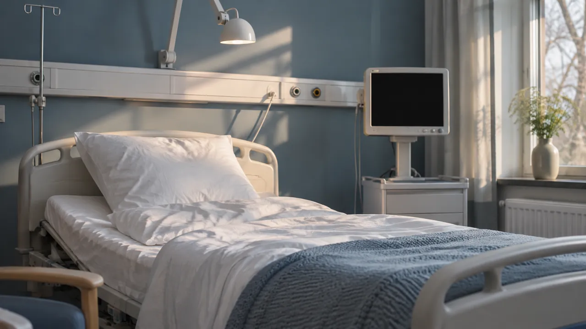
monitor · 1279 × 720 · 47 KiB 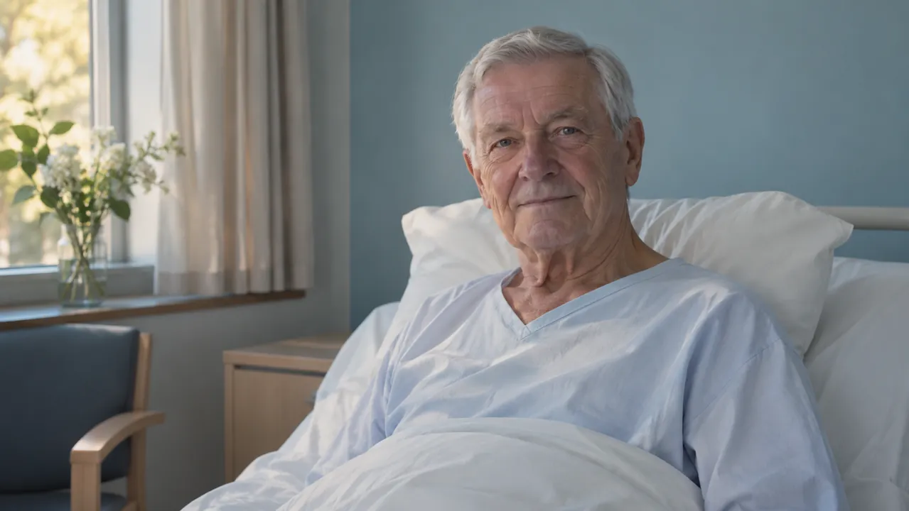
before · 1279 × 720 · 31 KiB 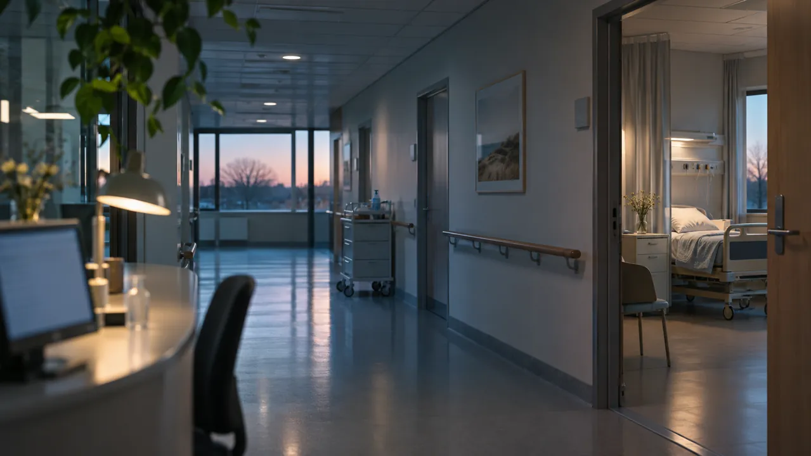
cover · 1279 × 720 · 40 KiB Til dokumentationsoversigten